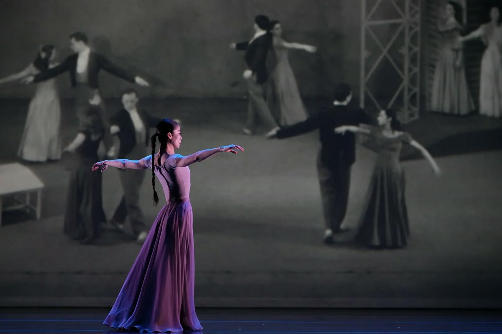
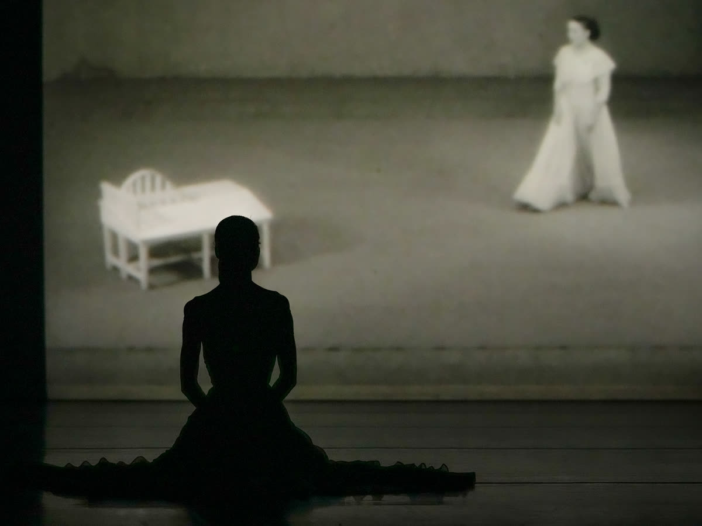

Letter to Nobody
In Letter to Nobody, Xin Ying dances a duet with Martha Graham through archival film. Conceived by Xin and choreographed with Mimi Yin, the piece draws on Graham’s 1940 work Letter to the World and Emily Dickinson’s poem “I’m Nobody! Who are you?”
As a dancer in the Martha Graham Dance Company, Xin has performed roles Graham made for herself. The duet gives her a chance to dance alongside the artist she never met and to ask how a dancer carries forward a role first made for someone else’s body.
The Technology
Working with NUUM Collective, I used generative media and AI-assisted analysis to reshape footage from the Martha Graham Dance Company archive into a projection that could share the stage with Xin.
The film pauses, resumes, and cuts between scenes as Xin dances with Graham’s image. At times that image towers over her. Elsewhere the live and filmed dancers align, creating the sense that they are moving in the same space.

Performance Documentation
Dances of the Mind · The Joyce Theater, New York City

Archival footage courtesy of the Martha Graham Dance Company.
Watch the Martha Graham Dance Company’s performance excerpt
Read Karen Backstein’s review in DanceLog NYC (PDF)